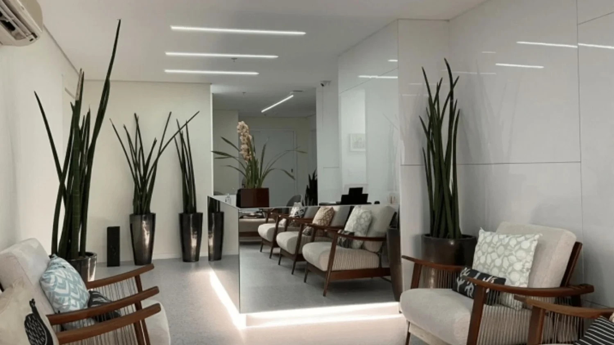
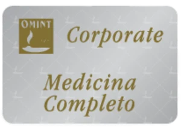

Plano de saúde Omint
A Clínica MS Vida está habilitada para atender pacientes conveniados ao plano de saúde Omint categoria Corporate.
Ginecologia - Consultas ginecológicas, consultas obstétricas e inserção de DIU.
Dermatologia - Consultas dermatológicas e pequenos procedimentos cirúrgicos.

Conheça nossa equipe médica para atendimento OMINT
Consulta médica com
Dra. Marianna Souza
Médica Ginecologista e Obstetra com residência na Beneficência Portuguesa São Paulo. Especialização em Ginecologia e Obstetrícia de alta performance voltada para consultório, no Hospital Israelita Albert Einstein. Atua desde 2019 na Clinica Dra Mayra Souza (MS vida) com atendimentos voltados para ginecologia e obstetrícia, reposição hormonal com ênfase em implantes hormonais, tratamentos com laserterapia voltados para síndrome geniturinária pós-menopausa, rejuvenescimento e estética vaginal. Titulada especialista em patologias do trato genital inferior e colposcopia.
Agende sua consulta ginecológicaConsulta médica com Dra. Flávia Souza
Médica especialista em Dermatologia pela Sociedade Brasileira de Dermatologia, com pós-graduação em Dermatologia e Medicina Estética pelo Instituto Pele Saudável/SP. É membro da Sociedade Brasileira de Dermatologia e da Sociedade Brasileira de Cirurgia Dermatológica , além do Grupo Brasileiro de Melanoma e do Colegio Ibero Latinoamericano de Dermatología (CILAD).
Agende sua consulta dermatológica

Saber, para Mudar Sim
Confira em nosso blog conteúdos para apoiar na transformação da sua saúde e bem-estar.